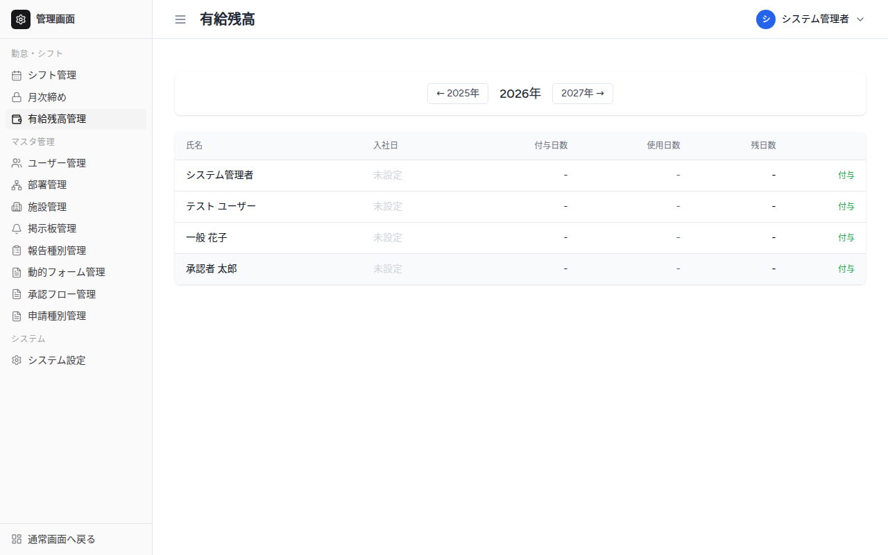
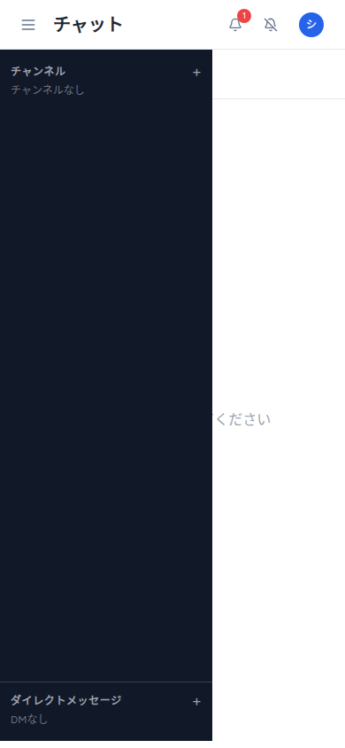
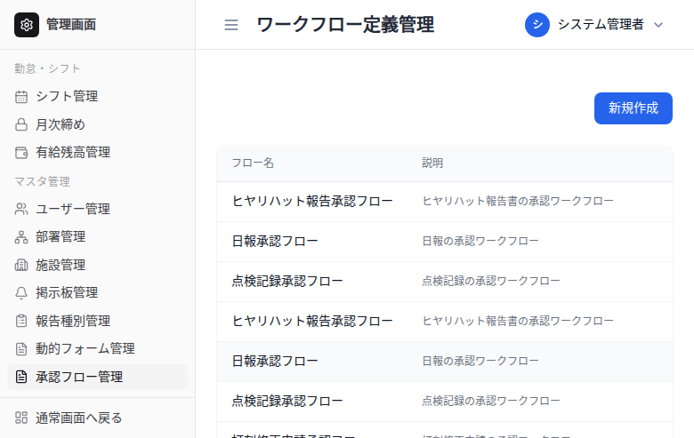

グループウェア
勤怠管理・チャット・タスク管理を統合したWebアプリ。要件定義・設計・DB設計・実装・テストまで一人で担当。複数機能を持つ業務システムの開発力を示すポートフォリオ作品。
demo / screenshot




overview
CONCEPT
製造・工場向けの業務支援Webアプリ。ヒヤリハット・日報・点検などの報告承認フロー、勤怠・シフト管理、チャット・掲示板を一つのシステムに統合
SCOPE
要件定義・DB設計・フロントエンド・バックエンド・認証・テストまで全工程を一人で実装
USERS
admin / approver / user の3ロール。Spatie Permissionによる細粒度の権限管理を実装
PLATFORM
Webアプリ（PC・スマホ対応のレスポンシブデザイン）
features
報告系（ヒヤリハット・日報・点検チェックリスト）
ヒヤリハット報告は危険度レベル・対策追跡付き。点検チェックリストはスケジュール型で期限超過を自動検知して管理者に通知。
汎用ワークフローエンジン
ステップ数・承認者・AND/OR条件を管理画面で自由に定義できる汎用エンジン。代理承認・差し戻し・再提出にも対応し、全承認アクションを履歴ログに記録。
動的フォーム設計
管理者がコーディング不要でフォーム項目（テキスト・選択・ファイル添付など）を設計。報告種別ごとに異なるフォームを画面上で構築できる。
勤怠・シフト管理
出退勤打刻・打刻修正申請・休暇申請・月次集計に対応。3交代シフト制と固定時間制を部署単位で混在運用可能。
チャット・掲示板
Laravel Reverbによるリアルタイムチャット。チャンネル作成・ファイル添付に対応。全体・部署別の掲示板も搭載。
ロールベース権限管理
Spatie Permissionによる細粒度のアクセス制御。admin / approver / user の3ロールで画面・操作範囲を分離。
tech stack
Laravel 12 / PHP 8.3
React 18 / TypeScript
Inertia.js
Laravel Reverb (WebSocket)
MySQL 8.0
Redis
Spatie Permission
Tailwind CSS
Vite 6
Docker Compose
Cloudflare Tunnel
Raspberry Pi
technical notes
Laravel + Inertia.js によるモノリシック構成を採用。APIとフロントを分離せず、サーバーサイドのルーティングをそのまま活かしながらReactのSPA体験を実現。開発工数を40〜60時間削減できると試算した。
リアルタイム通信はLaravel Reverbを用いてWebSocketサーバーを自前構築。Redisによるキュー処理と組み合わせ、集中アクセス時のタイムアウトリスクを解消した。
インフラ：Raspberry Pi上にDocker Composeで全スタックを構築し、Cloudflare Tunnelで外部公開。固定IPやポート開放不要でHTTPS配信を実現している。自宅サーバーながら実運用に耐える構成を低コストで作り上げた点がポイント。